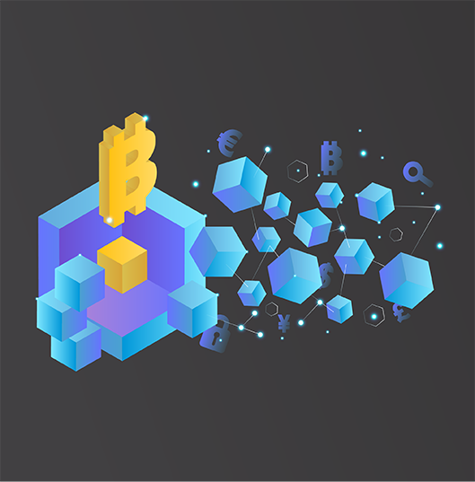
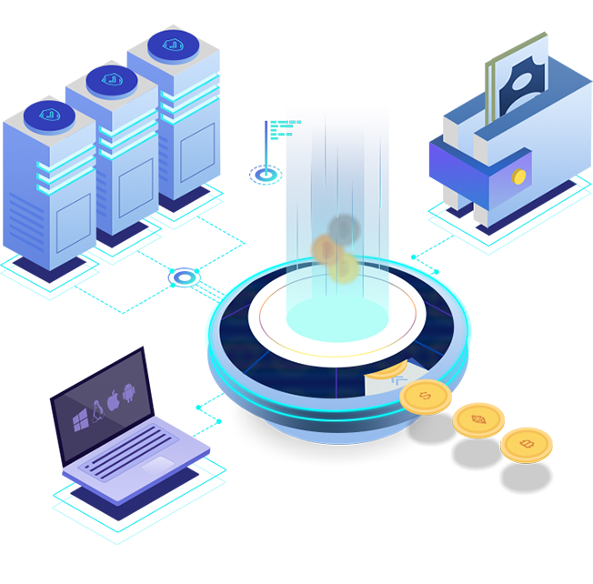

Disadvantages of a centralised exchange
- Since centralized exchanges hold their users wallet, they are extremely vulnerable to hacks and cyber attacks that could result in users losing their coin holdings (MTGox).
- Users can be locked out of an exchange or could lose access to their wallets during a software update as experienced during the cryptocurrency boom in 2017 (Kraken was down for 2 weeks in Jan 2018).
- Some centralized exchanges can have opaque operating procedures and can suddenly be closed (Bitsane) resulting in the loss of assets.
Advantages of decentralized exchange
- Asset security: users hold their private keys and thus their assets.
- With decentralization, transaction data is saved on the blockchain.

Why some decentralized exchanges are not actually decentralized
- There are 4 important entities of an exchange:
- Asset exchange.
- Capital deposit.
- Matching engine.
- Orderbook.
- To build a fully decentralized exchange, these entities must be decentralized. However, it is not trivial to decentralize these entities due to performance and architecture issues. Most DEX only build asset exchange as a decentralized solution (IDEX, Kyber Network, 0x, etc) which can be classified as a hybrid exchange.
- Profit sharing problem between masternodes that validate exchange transactions. For some decentralized exchanges, a few masternodes dominate transaction validation and hence also the fees resulting in the loss of interest in other masternodes.
How does novalex built a full decentralized exchange?
- We create our own blockchain: NovaChain for matching engine, orderbook and smart contract for asset exchange.
- We create a new consensus algorithm with new sharing mechanism.